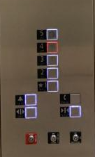
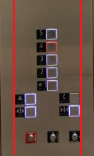
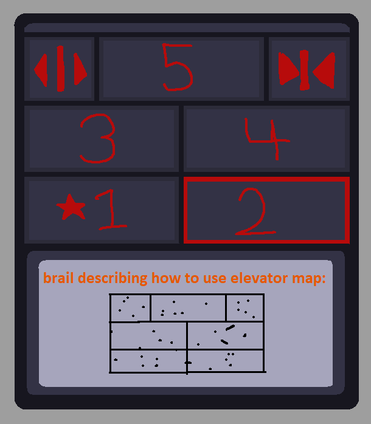

-----------------------------C reqs-----------------------------

Flat buttons that are glowing blue when idle, and orange when active provide proper feedback.

Emergency control keyholes are not aligned with rest of control panel. Could be condensed veritcally.
Cool design if the keyholes were in line with the rest of the control panel.
Elevator in action!!!

-----------------------------B reqs-----------------------------
Common elevator uses consist of choosing what floor you'd like to go to, and the option to close/open
the door. More rare uses consist of emergency needs, such as the alarm/phone option.
Buttons glowing different colors based on their current state shows adequte feedback for the user.
The elevators current functional design is handled well, there is nothing to improve upon in that aspect.
Rough Sketch for Final Elevator, made via MS paint:

-----------------------------A reqs-----------------------------